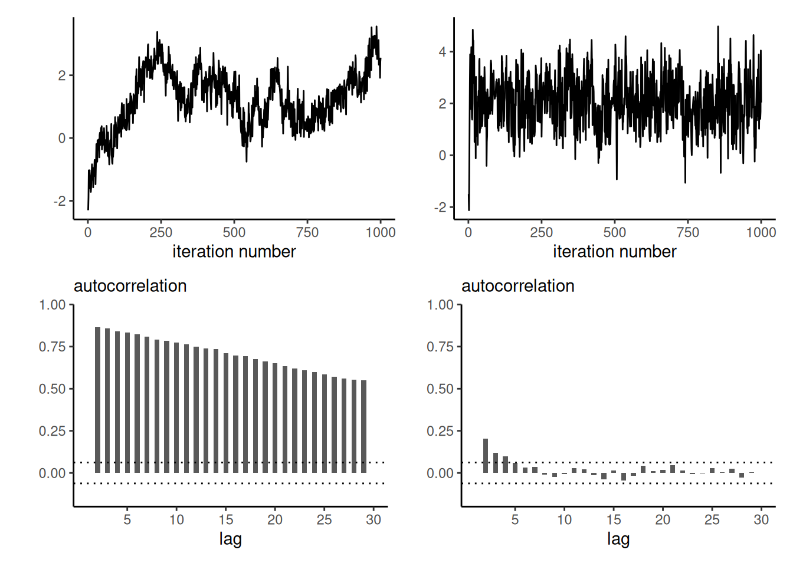

4 Markov chain Monte Carlo methods
There are two major approaches to handling the problem of the unknown normalizing constant: deterministic and stochastic approximations. The former includes Laplace and nested Laplace approximations, variational methods and expectation propagation. This chapter covers the latter, stochastic approximations, and focuses on implementation of basic Markov chain Monte Carlo algorithms. The simulation algorithms circumvent the need to calculate the normalizing constant of the posterior entirely. We present several examples of implementations, several tricks for tuning and diagnostics of convergence.
Ordinary Monte Carlo methods suffer from the curse of dimensionality, with few algorithms are generic enough to be useful in complex high-dimensional problems. Instead, we will construct a Markov chain with a given invariant distribution corresponding to the posterior. Markov chain Monte Carlo methods generate correlated draws that will target the posterior under suitable conditions.1
4.1 Markov chains
Before going forward with algorithms for sampling, we introduce some terminology that should be familiar to people with a background in time series analysis.
Definition 4.1 (Stationarity and Markov property) A stochastic (i.e., random) process is (weakly) stationary if the distribution of \(\{X_1, \ldots, X_t\}\) is the same as that of \(\{X_{n+1}, \ldots X_{t+n}\}\) for any value of \(n\) and given \(t\).
It is Markov if it satisfies the Markov property: given the current state of the chain, the future only depends on the current state and not on the past.
Autoregressive processes are not the only ones we can consider, although their simplicity lends itself to analytic calculations. More generally, for a correlated sequence, the variance of the stationary distribution is \[\begin{align*} \mathsf{Va}(Y_t) + 2 \sum_{k=1}^\infty \mathsf{Co}(Y_t, Y_{t-k}) \end{align*}\]
Proposition 4.1 (Effective sample size) Intuitively, a sample of correlated observations carries less information than an independent sample of draws. If we want to compute sample averages \(\overline{Y}_T=(Y_1+ \cdots + Y_T)/T\), the variance will be \[\begin{align*} \mathsf{Va}\left(\overline{Y}_T\right) = \frac{1}{T}\sum_{t=1}^T \mathsf{Va}(Y_t) + \frac{2}{T} \sum_{t=1}^{T-1}\sum_{s = t+1}^T \mathsf{Co}(Y_t, Y_s). \end{align*}\]
In the independent case, the covariance is zero so we get the sum of variances. If the process is stationary, the covariances at lag \(k\) are the same regardless of the time index and the variance is some constant, say \(\sigma^2\); this allows us to simplify calculations, \[\begin{align*} \mathsf{Va}(\overline{Y}_T) = \sigma^2 \left\{ 1 + \frac{2}{T}\sum_{t=1}^{T-1} (T-t) \mathsf{Cor}(Y_{T-k}, Y_{T})\right\}. \end{align*}\] Denote the lag-\(k\) autocorrelation \(\mathsf{Cor}(Y_{t}, Y_{t+k})\) by \(\gamma_k\). Under technical conditions2, a central limit theorem applies and we get an asymptotic variance for the mean of \[\begin{align*} \lim_{T \to \infty} T\mathsf{Va}\left(\overline{Y}_T\right) = \sigma^2 \left\{1+2\sum_{t=1}^\infty \gamma_t\right\}. \end{align*}\] This statement holds only if we start with draws from the stationary distribution, otherwise bets are off.
We need the effective sample size of our Monte Carlo averages based on a Markov chain of length \(B\) to be sufficient for the estimates to be meaningful. The effective sample size is, loosely speaking, the equivalent number of observations if the marginal posterior draws where independent and more formally \[ \mathsf{ESS} = \frac{B}{\left\{1+2\sum_{t=1}^\infty \gamma_t\right\}} \tag{4.1}\] where \(\gamma_t\) is the lag \(t\) correlation. The relative effective sample size is simply the fraction of the effective sample size over the Monte Carlo number of replications: small values of \(\mathsf{ESS}/B\) indicate pathological or inefficient samplers. If the ratio is larger than one, it indicates the sample is superefficient (as it generates negatively correlated draws).
In practice, we replace the unknown autocorrelations by sample estimates and truncate the series in Equation 4.1 at the point where they become negligible — typically when the consecutive sum of two consecutive becomes negative; see Section 1.4 of the Stan manual or Section 1.10.2 of Geyer (2011) for details.
Example 4.1 The lag-\(k\) correlation of the stationary autoregressive process of order 1 is \(\phi^k\), so summing the series gives an asymptotic variance of \(\sigma^2(1+\phi)/(1-\phi).\) We can constrast that to the variance of the stationary distribution for an independent sample, which is \(\sigma^2/(1-\phi^2)\). The price to pay for having correlated samples is inefficiency: the higher the autocorrelation, the larger the variability of our mean estimators.
We can see from Figure 4.1 that, when the autocorrelation is positive (as will be the cause in all applications of interest), we will suffer from variance inflation. To get the same uncertainty estimates for the mean with an \(\mathsf{AR}(1)\) process with \(\phi \approx 0.75\) than with an iid sample, we would need nine times as many observations: this is the prize to pay.
4.1.1 Uncertainty estimation with Markov chains
With a simple random sample containing independent and identically distributed observations, the standard error of the sample mean is \(\sigma/\sqrt{n}\) and we can use the empirical standard deviation \(\widehat{\sigma}\) to estimate the first term. For Markov chains, the correlation prevents us from using this approach. The output of thecoda package are based on fitting a high order autoregressive process to the Markov chain and using the formula of the unconditional variance of the \(\mathsf{AR}(p)\) to obtain the central limit theorem variance. An alternative method recommended by Geyer (2011) and implemented in his R package mcmc, is to segment the time series into batch, compute the means of each non-overlapping segment and use this standard deviation with suitable rescaling to get the central limit variance for the posterior mean. Figure 4.2 illustrate the method of batch means.
- Break the chain of length \(B\) (after burn in) in \(K\) blocks of size \(\approx K/B\).
- Compute the sample mean of each segment. These values form a Markov chain and should be approximately uncorrelated.
- Compute the standard deviation of the segments mean. Rescale by \(K^{-1/2}\) to get standard error of the global mean.
Why does the approach work? If the chain samples from the stationary distribution, all samples have the same mean. If we partition the sample into long enough, the sample mean of each blocks should be roughly independent (otherwise we could remove an overlapping portion). We can then compute the empirical standard deviation of the estimators. We can then compute the overall mean and use a scaling argument to relate the variability of the global estimator with the variability of the means of the smaller blocks.

When can we use output from a Markov chain in place of independent Monte Carlo draws? The assumptions laid out in the ergodic theorem are that the chain is irreducible and acyclic, ensuring that the chain has a unique stationary distribution. The ergodic theorem is a result about convergence of averages.
To make sense of these concepts, we consider a discrete Markov chain over the integers \(1, 2, 3\). A discrete-time stochastic process is a random sequences whose elements are part of some set, the state space, here the integers. We can encode the probability of moving from one state to the next via a transition matrix, whose rows contain the probabilities of moving from one state to the next and thus sum to one. We can run a Markov chain by sampling an initial state \(X_0\) at random from \(\{1, \ldots, 5\}\) and then consider the transitions from the conditional distribution, sampling \(p(X_t \mid X_{t-1})\). Because of the Markov property, the history of the chain does not matter: we only need to read the value \(i=X_{t-1}\) of the state and pick the \(i\)th row of \(P_3\) to know the probability of the different moves from the current state.
Irreducible means that the chain can move from anywhere to anywhere, so it doesn’t get stuck in part of the space forever. A transition matrix such as \(P_1\) below describes a reducible Markov chain, because once you get into state \(2\) or \(3\), you won’t escape. With reducible chains, the stationary distribution need not be unique, and so the target would depend on the starting values.
Cyclical chains loop around and visit periodically a state: \(P_2\) is an instance of transition matrix describing a chain that cycles from \(1\) to \(3\), \(3\) to \(2\) and \(2\) to \(1\) every three iteration. An acyclic chain is needed for convergence of marginals.
\[ P_1 = \begin{pmatrix} 0.5 & 0.3 & 0.2 \\ 0 & 0.4 & 0.6 \\ 0 & 0.5 & 0.5 \end{pmatrix}, \qquad P_2 = \begin{pmatrix} 0 & 0 & 1 \\ 1 & 0 & 0 \\ 0 & 1 & 0 \end{pmatrix}. \]
If a chain is irreducible and aperiodic, it has a unique stationary distribution and the limiting distribution of the Markov chain will converge there. For example, we consider a transition \(P_3\) on \(1, \ldots, 5\) defined as \[ P_3 = \begin{pmatrix} \frac{2}{3} & \frac{1}{3} & 0 & 0 & 0 \\ \frac{1}{6} & \frac{2}{3} & \frac{1}{6} & 0 & 0 \\ 0 & \frac{1}{6} & \frac{2}{3} & \frac{1}{6} & 0 \\ 0 & 0 & \frac{1}{6} & \frac{2}{3} & \frac{1}{6} \\ 0 & 0 & 0 & \frac{1}{3} & \frac{2}{3} \\ \end{pmatrix} \] The stationary distribution is the value of the row vector \(\boldsymbol{p}\), such that \(\boldsymbol{p} = \boldsymbol{p}\mathbf{P}\) for transition matrix \(\mathbf{P}\): we get \(\boldsymbol{p}_1=(0, 5/11, 6/11)\) for \(P_1\), \((1/3, 1/3, 1/3)\) for \(P_2\) and \((1,2,2,2,1)/8\) for \(P_3\).
Figure 4.3 shows the path of the walk and the empirical proportion of the time spent in each state, as time progress. Since the Markov chain has a unique stationary distribution, we expect these to converge to it.

4.2 Markov chain Monte Carlo algorithms
The Markov chain Monte Carlo revolution in the 1990s made Bayesian inference mainstream by allowing inference for models when only approximations were permitted, and coincided with a time at which computers became more widely available. The idea is to draw correlated samples from a posterior via Markov chains, constructed to have the posterior as invariant stationary distribution.
4.2.1 Metropolis–Hastings algorithm
Named after Metropolis et al. (1953), Hastings (1970), its relevance took a long time to gain traction in the statistical community. The idea of the Metropolis–Hastings algorithm is to construct a Markov chain targeting a distribution \(p(\cdot)\).
Proposition 4.2 (Metropolis–Hastings algorithm) We consider from a density function \(p(\boldsymbol{\theta})\), known up to a normalizing factor not depending on \(\boldsymbol{\theta}\). We use a (conditional) proposal density \(q(\boldsymbol{\theta} \mid \boldsymbol{\theta}^*)\) which has non-zero probability over the support of \(p(\cdot)\), as transition kernel to generate proposals.
The Metropolis–Hastings build a Markov chain starting from an initial value \(\boldsymbol{\theta}_0\):
- draw a proposal value \(\boldsymbol{\theta}_t^{\star} \sim q(\boldsymbol{\theta} \mid \boldsymbol{\theta}_{t-1})\).
- Compute the acceptance ratio \[ R = \frac{p(\boldsymbol{\theta}_t^{\star})}{p(\boldsymbol{\theta}_{t-1})}\frac{q(\boldsymbol{\theta}_{t-1} \mid \boldsymbol{\theta}_t^{\star} )}{q(\boldsymbol{\theta}_t^{\star} \mid \boldsymbol{\theta}_{t-1})} \tag{4.2}\]
- With probability \(\min\{R, 1\}\), accept the proposal and set \(\boldsymbol{\theta}_t \gets \boldsymbol{\theta}_t^{\star}\), otherwise set the value to the previous state, \(\boldsymbol{\theta}_t \gets \boldsymbol{\theta}_{t-1}\).
The Metropolis–Hastings algorithm generates samples from the posterior \(p(\boldsymbol{\theta} \mid \boldsymbol{y})\) if the Markov chain it defines is reversible: we say it satisfies the detailed balance condition when the density of \(\boldsymbol{\theta}_{t+1} \mid \boldsymbol{\theta}_{t}\), say \(f(\boldsymbol{\theta}_{t+1} \mid \boldsymbol{\theta}_{t})\). Detailed balance means \[\begin{align*} f(\boldsymbol{\theta}_{t+1} \mid \boldsymbol{\theta}_{t})p(\boldsymbol{\theta}_{t} \mid \boldsymbol{y}) = f(\boldsymbol{\theta}_{t} \mid \boldsymbol{\theta}_{t+1})p(\boldsymbol{\theta}_{t+1} \mid \boldsymbol{y}) \end{align*}\] This guarantees that, if \(\boldsymbol{\theta}_{t}\) is drawn from the posterior, then the left hand side is the joint density of \((\boldsymbol{\theta}_{t}, \boldsymbol{\theta}_{t+1})\) and the marginal distribution obtained by integrating over \(\boldsymbol{\theta}_{t}\), \[\begin{align*} &\int f(\boldsymbol{\theta}_{t+1} \mid \boldsymbol{\theta}_{t})p(\boldsymbol{\theta}_{t} \mid \boldsymbol{y})\mathrm{d} \boldsymbol{\theta}_{t} \\&\quad = \int f(\boldsymbol{\theta}_{t} \mid \boldsymbol{\theta}_{t+1})p(\boldsymbol{\theta}_{t+1} \mid \boldsymbol{y})\mathrm{d} \boldsymbol{\theta}_{t} \\&\quad= p(\boldsymbol{\theta}_{t+1} \mid \boldsymbol{y}) \end{align*}\] and any draw from the posterior will generate a new realization from the posterior. We also ensure that, provided the starting value as non-zero probability under the posterior, the chain will converge to the stationarity distribution (albeit perhaps slowly).
Remark (Interpretation of the algorithm). If \(R>1\), the proposal has higher density and we always accept the move. If the ratio is less than one, the proposal is in a lower probability region, we accept the move with probability \(R\) and set \(\boldsymbol{\theta}_{t}=\boldsymbol{\theta}^{\star}_t\); if we reject, the Markov chain stays at the current value, which induces autocorrelation. Since the acceptance probability depends only on the density through ratios, we can work with unnormalized density functions and this is what allows us, if our proposal density is the (marginal) posterior of the parameter, to obtain approximate posterior samples without having to compute the marginal likelihood.
Remark (Blank run). To check that the algorithm is well-defined, we can remove the log likelihood component and run the algorithm: if it is correct, the resulting draws should be drawn from the prior provided the latter is proper (Green 2001, 55).
Remark (Symmetric proposals). Suppose we generate a candidate sample \(\boldsymbol{\theta}_t^{\star}\) from a symmetric distribution \(q(\cdot \mid \cdot)\) centered at \(\boldsymbol{\theta}_{t-1}\), such as the random walk \(\boldsymbol{\theta}_t^{\star} =\boldsymbol{\theta}_{t-1}+ Z\) where \(Z\) has a symmetric distribution. Then, the proposal density ratio cancels so need not be computed in the Metropolis ratio of Equation 4.2.
Remark (Calculations). In practice, we compute the log of the acceptance ratio, \(\ln R\), to avoid numerical overflow. If our target is log posterior density, we have \[ \ln \left\{\frac{p(\boldsymbol{\theta}_t^{\star})}{p(\boldsymbol{\theta}_{t-1})}\right\} = \ell(\boldsymbol{\theta}_t^{\star}) + \ln p(\boldsymbol{\theta}_t^{\star}) - \ell(\boldsymbol{\theta}_{t-1}) - \ln p(\boldsymbol{\theta}_{t-1}) \] and we proceed likewise for the log of the ratio of transition kernels. We then compare the value of \(\ln R\) (if less than zero) to \(\log(U)\), where \(U \sim \mathsf{U}(0,1)\). We accept the move if \(\ln(R) >\log(U)\) and keep the previous value otherwise.
Example 4.2 Consider again the Upworthy data from Example 3.6. We model the Poisson rates \(\lambda_i\) \((i=1,2),\) this time with the usual Poisson regression parametrization in terms of log rate for the baseline , \(\log(\lambda_2) = \beta\), and log odds rates \(\kappa = \log(\lambda_1) - \log(\lambda_2)\). Our model is \[\begin{align*} Y_{i} &\sim \mathsf{Po}(n_i\lambda_i), \qquad (i=1,2)\\ \lambda_1 &= \exp(\beta + \kappa) \\ \lambda_2 &= \exp(\beta) \\ \beta & \sim \mathsf{Gauss}(\log 0.01, 1.5) \\ \kappa &\sim \mathsf{Gauss}(0, 1) \end{align*}\] There are two parameters in the model, which can be updated in turn or jointly.
data(upworthy_question, package = "hecbayes")
# Compute sufficient statistics
data <- upworthy_question |>
dplyr::group_by(question) |>
dplyr::summarize(ntot = sum(impressions),
y = sum(clicks))
# Code log posterior as sum of log likelihood and log prior
loglik <- function(par, counts = data$y, offset = data$ntot, ...){
lambda <- exp(c(par[1] + log(offset[1]), par[1] + par[2] + log(offset[2])))
sum(dpois(x = counts, lambda = lambda, log = TRUE))
}
logprior <- function(par, ...){
dnorm(x = par[1], mean = log(0.01), sd = 1.5, log = TRUE) +
dnorm(x = par[2], log = TRUE)
}
logpost <- function(par, ...){
loglik(par, ...) + logprior(par, ...)
}
# Compute maximum a posteriori (MAP)
map <- optim(
par = c(-4, 0.07),
fn = logpost,
control = list(fnscale = -1),
offset = data$ntot,
counts = data$y,
hessian = TRUE)
# Use MAP as starting value
cur <- map$par
# Compute logpost_cur - we can keep track of this to reduce calculations
logpost_cur <- logpost(cur)
# Proposal covariance
cov_map <- -2*solve(map$hessian)
chol <- chol(cov_map)
set.seed(80601)
niter <- 1e4L
chain <- matrix(0, nrow = niter, ncol = 2L)
colnames(chain) <- c("beta","kappa")
naccept <- 0L
for(i in seq_len(niter)){
# Multivariate normal proposal - symmetric random walk
prop <- chol %*% rnorm(n = 2) + cur
logpost_prop <- logpost(prop)
# Compute acceptance ratio (no q because the ratio is 1)
logR <- logpost_prop - logpost_cur
if(logR > -rexp(1)){
cur <- prop
logpost_cur <- logpost_prop
naccept <- naccept + 1L
}
chain[i,] <- cur
}
# Posterior summaries
summary(coda::as.mcmc(chain))
Iterations = 1:10000
Thinning interval = 1
Number of chains = 1
Sample size per chain = 10000
1. Empirical mean and standard deviation for each variable,
plus standard error of the mean:
Mean SD Naive SE Time-series SE
beta -4.51268 0.001697 1.697e-05 6.176e-05
kappa 0.07075 0.002033 2.033e-05 9.741e-05
2. Quantiles for each variable:
2.5% 25% 50% 75% 97.5%
beta -4.51591 -4.51385 -4.51273 -4.51154 -4.50929
kappa 0.06673 0.06933 0.07077 0.07212 0.07463# Computing standard errors using batch means
sqrt(diag(mcmc::olbm(chain, batch.length = niter/40)))[1] 5.717097e-05 8.220816e-05The acceptance rate of the algorithm is 35.1% and the posterior means are \(\beta =-4.51\) and \(\kappa =0.07\).

Figure 4.5 shows the posterior samples, which are very nearly bivariate Gaussian. The parametrization in terms of log odds ratio induces strong negative dependence, so if we were to sample \(\kappa\), then \(\beta\), we would have much larger inefficiency and slower exploration. Instead, the code used a bivariate Gaussian random walk proposal whose covariance matrix was taken as a multiple of the inverse of the negative hessian (equivalently, to the observed information matrix of the log posterior), evaluated at of the maximum a posteriori. This Gaussian approximation is called Laplace approximation: it is advisable to reparametrize the model so that the distribution is nearly symmetric, so that the approximation is good. In this example, because of the large sample, the Gaussian approximation implied by Bernstein–von Mises’ theorem is excellent.
The quality of the mixing of the chain (autocorrelation), depends on the proposal variance, which can obtain by trial and error. Trace plots Figure 4.4 show the values of the chain as a function of iteration number. If our algorithm works well, we expect the proposals to center around the posterior mode and resemble a fat hairy caterpillar. If the variance is too small, the acceptance rate will increase but most steps will be small. If the variance of the proposal is too high, the acceptance rate will decrease (as many proposal moves will have much lower posterior), so the chain will get stuck for long periods of time. This is Goldilock’s principle, as illustrated in Figure 4.6.

One way to calibrate is to track the acceptance rate of the proposals: for the three chains in Figure 4.6, these are 0.932, 0.33, 0.12. In one-dimensional toy problems with Gaussian distributions, an acceptance rate of 0.44 is optimal, and this ratio decreases to 0.234 when \(D \geq 2\) Sherlock (2013). This need not generalize to other settings and depends on the context. Optimal rate for alternative algorithms, such as Metropolis-adjusted Langevin algorithm, are typically higher.
We can tune the variance of the global proposal (Andrieu and Thoms 2008) to improve the mixing of the chains at approximate stationarity. This is done by increasing (decreasing) the variance if the historical acceptance rate is too high (respectively low) during the burn in period, and reinitializing after any change with an acceptance target of \(0.44\). We stop adapting to ensure convergence to the posterior after a suitable number of initial iterations. Adaptive MCMC methods use an initial warm up period to find good proposals: we can consider a block of length \(L\), compute the acceptance rate, multiply the variance by a scaling factor and run the chain a little longer. We only keep samples obtained after the adaptation phase.
We can also plot the autocorrelation of the entries of the chain as a function of lags, a display known as correlogram in the time series literature but colloquially referred to as autocorrelation function (acf). The higher the autocorrelation, the more variance inflation one has and the longer the number of steps before two draws are treated as independent. Figure 4.7 shows the effect of the proposal variance on the correlation for the three chains. Practitioners designing very inefficient Markov chain Monte Carlo algorithms often thin their series: that is, they keep only every \(k\) iteration. This is not recommended practice unless storage is an issue and usually points towards inefficient sampling algorithms.

Remark (Independence Metropolis–Hastings). If the proposal density \(q(\cdot)\) does not depend on the current state \(\boldsymbol{\theta}_{t-1}\), the algorithm is termed independence. To maximize acceptance, we could design a candidate distribution whose mode is at the maximum a posteriori value. To efficiently explore the state space, we need to place enough density in all regions, for example by taking a heavy-tailed distributions, so that we explore the full support. Such proposals can be however inefficient and fail when the distribution of interest is multimodal. The independence Metropolis–Hastings algorithm then resembles accept-reject. If the ratio \(p(\boldsymbol{\theta})/q(\boldsymbol{\theta})\) is bounded above by \(C \geq 1\), then we can make comparisons with rejection sampling. Lemma 7.9 of Robert and Casella (2004) shows that the probability of acceptance of a move for the Markov chain is at least \(1/C\), which is larger than the accept-reject.
In models with multiple parameter, we can use Metropolis–Hastings algorithm to update every parameter in turn, fixing the value of the others, rather than update them in block. The reason behind this pragmatic choice is that, as for ordinary Monte Carlo sampling, the acceptance rate goes down sharply with the dimension of the vector. Updating parameters one at a time can lead to higher acceptance rates, but slower exploration as a result of the correlation between parameters.
If we can factorize the log posterior, then some updates may not depend on all parameters: in a hierarchical model, hyperpriors parameter only appear through priors, etc. This can reduce computational costs.
Proposition 4.3 (Parameter transformation) If a parameter is bounded in the interval \((a,b)\), where \(-\infty \leq a < b \leq \infty\), we can consider a bijective transformation \(\vartheta \equiv t(\theta): (a,b) \to \mathbb{R}\) with differentiable inverse. The log density of the transformed variable, assuming it exists, is \[\begin{align*} f_\vartheta(\vartheta) = f_{\theta}\{t^{-1}(\vartheta)\} \left| \frac{\mathrm{d}}{\mathrm{d} \vartheta} t^{-1}(\vartheta)\right| \end{align*}\] For example, we can use of the following transformations for finite \(a, b\) in the software:
- if \(\theta \in (a, \infty)\) (lower bound only), then \(\vartheta = \log(\theta-a)\) and \(f_{\vartheta}(\vartheta)=f_{\theta}\{\exp(\vartheta) + a\}\cdot \exp(\vartheta)\)
- if \(\theta \in (-\infty, b)\) (upper bound only), then \(\vartheta = \log(b-\theta)\) and \(f_{\vartheta}(\vartheta)=f_{\theta}\{b-\exp(\vartheta)\}\cdot \exp(\vartheta)\)
- if \(\theta \in (a, b)\) (both lower and upper bound), then \(\vartheta = \mathrm{logit}\{(\theta-a)/(b-a)\}\) and \[\begin{align*} f_{\vartheta}(\vartheta)&=f_{\theta}\{a+(b-a) \mathrm{expit}(\vartheta)\} (b-a)\\&\quad \times \mathrm{expit}(\vartheta)\{1-\mathrm{expit}(\vartheta)\} \end{align*}\]
To guarantee that our proposals fall in the support of \(\theta\), we can thus run a symmetric random walk proposal on the transformed scale by drawing \(\vartheta_{t}^{\star} \sim \vartheta_{t-1}+\tau Z\) where \(Z\sim\mathsf{Gauss}(0, 1)\). Due to the transformation, the kernel ratio now contains the Jacobian.
Proposition 4.4 (Truncated proposals) As an alternative, if we are dealing with parameters that are restricted in \([a,b]\), we can simulate using a random walk but with truncated Gaussian steps, taking \(\theta^{\star}_{t} \sim \mathsf{TruncNorm}(\vartheta_{t-1}, \tau^2, a, b).\) The benefits of using the truncated proposal becomes more apparent when we move to more advanced proposals whose mean and variance depends on the gradient and or the hessian of the underlying unnormalized log posterior, as the mean can be lower than \(a\) or larger than \(b\): this would garantee zero acceptance with regular Gaussian random walk. The TruncatedNormal package can be used to efficiently evaluate such instances using results from Botev and L’Écuyer (2017) even when the truncation bounds are far from the mode. the normalizing constant of the truncated Gaussian in the denominator of the density is a function of the location and scale parameters: if these depend on the current value of \(\boldsymbol{\theta}_{t-1}\), as is the case for a random walk, we need to keep these terms as part of the Metropolis ratio. The mean and standard deviation of the truncated Gaussian are not equal to the parameters \(\mu\) (which corresponds to the mode, provided \(a < \mu < b\)) and \(\sigma\).
Proposition 4.5 (Efficient proposals) Rather than simply build a random walk, we can exploit the geometry of the posterior using the gradient, via Metropolis-ajusted Langevin algorithm (MALA), or using local quadratic approximations of the target.
Let \(p(\theta)\) denote the conditional (unnormalized) log posterior for a scalar parameter \(\theta \in (a, b)\). We considering a Taylor series expansion of \(p(\cdot)\) around the current parameter value \(\theta_{t-1}\), \[\begin{align*} p(\theta) \approx p(\theta_{t-1}) + p'(\theta_{t-1})(\theta - \theta_{t-1}) + \frac{1}{2} p''(\theta_{t-1})(\theta - \theta_{t-1})^2 \end{align*}\] plus remainder, which suggests a Gaussian approximation with mean \(\mu_{t-1} = \theta_{t-1} - f'(\theta_{t-1})/f''(\theta_{t-1})\) and precision \(\tau^{-2} = -f''(\theta_{t-1})\). We can use truncated Gaussian distribution on \((a, b)\) with mean \(\mu\) and standard deviation \(\tau\), denoted \(\mathsf{TruncNorm}(\mu, \tau, a, b)\) with corresponding density function \(q(\cdot; \mu, \tau, a, b)\). The Metropolis acceptance ratio for a proposal \(\theta^{\star}_{t} \sim \mathsf{TruncNorm}(\mu_{t-1}, \tau_{t-1}, a, b)\) is \[\begin{align*} \alpha = \frac{p(\theta^{\star}_{t})}{p(\theta_{t-1})} \frac{ q(\theta_{t-1} \mid \mu_{t}^{\star}, \tau_{t}^{\star}, a, b)}{q(\theta^{\star}_{t} \mid \mu_{t-1}, \tau_{t-1}, a, b)} \end{align*}\] and we set \(\theta^{(t+1)} = \theta^{\star}_{t}\) with probability \(\min\{1, r\}\) and \(\theta^{(t+1)} = \theta_{t-1}\) otherwise. To evaluate the ratio of truncated Gaussian densities \(q(\cdot; \mu, \tau, a, b)\), we need to compute the Taylor approximation from the current parameter value, but also the reverse move from the proposal \(\theta^{\star}_{t}\). Another option is to modify the move dictated by the rescaled gradient by taking instead \[\mu_{t-1} = \theta_{t-1} - \eta f'(\theta_{t-1})/f''(\theta_{t-1}).\] The proposal includes an additional learning rate parameter, \(\eta \leq 1\), whose role is to prevent oscillations of the quadratic approximation, as in a Newton–Raphson algorithm. Relative to a random walk Metropolis–Hastings, the proposal automatically adjusts to the local geometry of the target, which guarantees a higher acceptance rate and lower autocorrelation for the Markov chain despite the higher evaluation costs. The proposal requires that both \(f''(\theta_{t-1})\) and \(f''(\theta^{\star}_{t})\) be negative since the variance is \(-1/f''(\theta)\): this shouldn’t be problematic in the vicinity of the mode. Otherwise, one could use a global scaling derived from the hessian at the mode.
The simpler Metropolis-adjusted Langevin algorithm is equivalent to using a Gaussian random walk where the proposal has mean \(\boldsymbol{\theta}_{t-1} + \mathbf{A}\eta \nabla \log p(\boldsymbol{\theta}_{t-1}; \boldsymbol{y})\) and variance \(\tau^2\mathbf{A}\), for some mass matrix \(\mathbf{A}\) and learning rate \(\eta < 1\). Taking \(\mathbf{A}\) as the identity matrix, which assumes the parameters are isotropic (same variance, uncorrelated) is the default choice although seldom far from optimal.
For MALA to work well, we need both to start near stationarity, to ensure that the gradient is relatively small and to prevent oscillations. One can dampen the size of the step initially if needed to avoid overshooting. The proposal variance, the other tuning parameter, is critical to the success of the algorithm. The usual target for the variance is one that gives an acceptance rate of roughly 0.574. These more efficient methods require additional calculations of the gradient and Hessian, either numerically or analytically. Depending on the situation and the computational costs of such calculations, the additional overhead may not be worth it.
Example 4.3 We revisit the Upworthy data, this time modelling each individual headline as a separate observation. We view \(n=\)nimpression as the sample size of a binomial distribution and nclick as the number of successes. Since the number of trials is large, the sample average nclick/nimpression, denoted \(y\) in the sequel, is approximately Gaussian. We assume that each story has a similar population rate and capture the heterogeneity inherent to each news story by treating each mean as a sample. The variance of the sample average or click rate is proportional to \(n^{-1}\), where \(n\) is the number of impressions. To allow for underdispersion or overdispersion, we thus consider a Gaussian likelihood \(Y_i \sim \mathsf{Gauss}(\mu, \sigma^2/n_i)\). We perform Bayesian inference for \(\mu, \sigma\) after assigning a truncated Gaussian prior for \(\mu \sim \mathsf{TruncNorm}(0.01, 0.1^2)\) over \([0,1]\) and an penalized complexity prior for \(\sigma \sim \mathsf{Exp}(0.7)\).
data(upworthy_question, package = "hecbayes")
# Select data for a single question
qdata <- upworthy_question |>
dplyr::filter(question == "yes") |>
dplyr::mutate(y = clicks/impressions,
no = impressions)
# Create functions with the same signature (...) for the algorithm
logpost <- function(par, data, ...){
mu <- par[1]; sigma <- par[2]
no <- data$no
y <- data$y
if(isTRUE(any(sigma <= 0, mu < 0, mu > 1))){
return(-Inf)
}
dnorm(x = mu, mean = 0.01, sd = 0.1, log = TRUE) +
dexp(sigma, rate = 0.7, log = TRUE) +
sum(dnorm(x = y, mean = mu, sd = sigma/sqrt(no), log = TRUE))
}
logpost_grad <- function(par, data, ...){
no <- data$no
y <- data$y
mu <- par[1]; sigma <- par[2]
c(sum(no*(y-mu))/sigma^2 -(mu - 0.01)/0.01,
-length(y)/sigma + sum(no*(y-mu)^2)/sigma^3 -0.7
)
}
# Starting values - MAP
map <- optim(
par = c(mean(qdata$y), 0.5),
fn = function(x){-logpost(x, data = qdata)},
gr = function(x){-logpost_grad(x, data = qdata)},
hessian = TRUE,
method = "BFGS")
# Set initial parameter values
curr <- map$par
# Check convergence
logpost_grad(curr, data = qdata)[1] 7.650733e-03 5.575424e-05# Compute a mass matrix
Amat <- solve(map$hessian)
# Cholesky root - for random number generation
cholA <- chol(Amat)
# Create containers for MCMC
B <- 1e4L # number of iterations
warmup <- 1e3L # adaptation period
npar <- 2L # number of parameters
prop_sd <- rep(1, npar) #updating both parameters jointly
chains <- matrix(nrow = B, ncol = npar)
damping <- 0.8 # learning rate
acceptance <- attempts <- 0
colnames(chains) <- names(curr) <- c("mu","sigma")
prop_var <- diag(prop_sd) %*% Amat %*% diag(prop_sd)
for(i in seq_len(B + warmup)){
ind <- pmax(1, i - warmup)
# Compute the proposal mean for the Newton step
prop_mean <- c(curr + damping *
Amat %*% logpost_grad(curr, data = qdata))
# prop <- prop_sd * c(rnorm(npar) %*% cholA) + prop_mean
prop <- c(mvtnorm::rmvnorm(
n = 1,
mean = prop_mean,
sigma = prop_var))
# Compute the reverse step
curr_mean <- c(prop + damping *
Amat %*% logpost_grad(prop, data = qdata))
# log of ratio of bivariate Gaussian densities
logmh <- mvtnorm::dmvnorm(
x = curr, mean = prop_mean,
sigma = prop_var,
log = TRUE) -
mvtnorm::dmvnorm(
x = prop,
mean = curr_mean,
sigma = prop_var,
log = TRUE) +
logpost(prop, data = qdata) -
logpost(curr, data = qdata)
if(logmh > log(runif(1))){
curr <- prop
acceptance <- acceptance + 1L
}
attempts <- attempts + 1L
# Save current value
chains[ind,] <- curr
if(i %% 100 & i < warmup){
out <- hecbayes::adaptive(
attempts = attempts,
acceptance = acceptance,
sd.p = prop_sd,
target = 0.574)
prop_sd <- out$sd
acceptance <- out$acc
attempts <- out$att
prop_var <- diag(prop_sd) %*% Amat %*% diag(prop_sd)
}
}MALA requires critically a good mass matrix, especially if the gradient is very large at the starting values (often the case when the starting value is far from the mode). Given the precision of the original observations, we did not need to modify anything to deal with the parameter constraints \(0 \leq \mu \leq 1\) and \(\sigma>0\), outside of encoding them in the log posterior function.
The posterior mean for the standard deviation is 0.64, which suggests overdispersion.
4.3 Gibbs sampling
The Gibbs sampling algorithm builds a Markov chain by iterating through a sequence of conditional distributions. Consider a model with \(\boldsymbol{\theta} \in \boldsymbol{\Theta} \subseteq \mathbb{R}^p\). We consider a single (or \(m \leq p\) blocks of parameters), say \(\boldsymbol{\theta}^{[j]}\), such that, conditional on the remaining components of the parameter vector \(\boldsymbol{\theta}^{-[j]}\), the conditional posterior \(p(\boldsymbol{\theta}^{[j]} \mid \boldsymbol{\theta}^{-[j]}, \boldsymbol{y})\) is from a known distribution from which we can simulate draws
At iteration \(t\), we can update each block in turn: note that the \(k\)th block uses the partially updated state \[\begin{align*} \boldsymbol{\theta}^{-[k]\star} = (\boldsymbol{\theta}_{t}^{[1]}, \ldots, \boldsymbol{\theta}_{t}^{[k-1]},\boldsymbol{\theta}_{t-1}^{[k+1]}, \boldsymbol{\theta}_{t-1}^{[m]}) \end{align*}\] which corresponds to the current value of the parameter vector after the updates. To check the validity of the Gibbs sampler, see the methods proposed in Geweke (2004).
The Gibbs sampling can be viewed as a special case of Metropolis–Hastings where the proposal distribution \(q\) is \(p(\boldsymbol{\theta}^{[j]} \mid \boldsymbol{\theta}^{-[j]\star}, \boldsymbol{y})\). The particularity is that all proposals get accepted because the log posterior of the partial update, equals the proposal distribution, so \[\begin{align*} R = \frac{p(\boldsymbol{\theta}_t^{[j]\star} \mid \boldsymbol{\theta}^{-[j]\star}, \boldsymbol{y})}{p(\boldsymbol{\theta}_{t-1}^{[j]\star} \mid \boldsymbol{\theta}^{-[j]\star}, \boldsymbol{y})}\frac{p(\boldsymbol{\theta}_{t-1}^{[j]\star} \mid \boldsymbol{\theta}^{-[j]\star}, \boldsymbol{y})}{p(\boldsymbol{\theta}_t^{[j]\star} \mid \boldsymbol{\theta}^{-[j]\star}, \boldsymbol{y})}=1. \end{align*}\] Regardless of the order (systematic scan or random scan), the procedure remains valid. The Gibbs sampling is thus an automatic algorithm: we only need to derive the conditional posterior distributions of the parameters and run the sampler, and there are no tuning parameter involved. If the parameters are strongly correlated, the changes for each parameter will be incremental and this will lead to slow mixing and large autocorrelation, even if the values drawn are all different. Figure 4.8 shows 25 steps from a Gibbs algorithm for a bivariate target.

As a toy illustration, we use Gibbs sampling to simulate data from a \(d\)-dimensional multivariate Gaussian target with mean \(\boldsymbol{\mu}\) and equicorrelation covariance matrix \(\mathbf{\Sigma} = (1-\rho)\mathbf{I}_d + \rho\boldsymbol{1}_{d}\boldsymbol{1}^\top_d\) with inverse \[\mathbf{Q} = \boldsymbol{\Sigma}^{-1}=(1-\rho)^{-1}\left\{\mathbf{I}_d - \rho \mathbf{1}_d\mathbf{1}_d/(1+(d-1)\rho)\right\},\] for known correlation coefficient \(\rho\). While we can easily sample independent observations, the exercise is insightful to see how well the methods works as the dimension increases, and when the correlation between pairs becomes stronger.
Consider \(\boldsymbol{Y} \sim \mathsf{Gauss}_d(\boldsymbol{\mu}, \boldsymbol{\Sigma})\) and a partition \((\boldsymbol{Y}_1^\top, \boldsymbol{Y}_2^\top)^\top\): the conditional distribution of the \(k\) subvector \(\boldsymbol{Y}_1\) given the \(d-k\) other components \(\boldsymbol{Y}_2\) is, in terms of either the covariance (first line) or the precision (second line), Gaussian where \[\begin{align*} \boldsymbol{Y}_1 \mid \boldsymbol{Y}_2=\boldsymbol{y}_2 &\sim \mathsf{Gauss}_{k}\left\{ \boldsymbol{\mu}_1 + \boldsymbol{\Sigma}_{12} \boldsymbol{\Sigma}_{22}^{-1}(\boldsymbol{y}_2 - \boldsymbol{\mu}_2), \boldsymbol{\Sigma}_{11} - \boldsymbol{\Sigma}_{12}\boldsymbol{\Sigma}_{22}^{-1}\boldsymbol{\Sigma}_{21}\right\} \\&\sim \mathsf{Gauss}_{k}\left\{ \boldsymbol{\mu}_1 -\mathbf{Q}_{11}^{-1}\mathbf{Q}_{12}(\boldsymbol{y}_2 - \boldsymbol{\mu}_2), \mathbf{Q}_{11}^{-1}\right\}. \end{align*}\]
# Create a 20 dimensional equicorrelation
d <- 20
Q <- hecbayes::equicorrelation(d = d, rho = 0.9, precision = TRUE)
B <- 1e4
chains <- matrix(0, nrow = B, ncol = d)
mu <- rep(2, d)
# Start far from mode
curr <- rep(-3, d)
for(i in seq_len(B)){
# Random scan, updating one variable at a time
for(j in sample(1:d, size = d)){
# sample from conditional Gaussian given curr
curr[j] <- hecbayes::rcondmvnorm(
n = 1,
value = curr,
ind = j,
mean = mu,
precision = Q)
}
chains[i,] <- curr # save values after full round of update
}As the dimension of the parameter space increases, and as the correlation between components becomes larger, the efficiency of the Gibbs sampler degrades: Figure 4.9 shows the first component for updating one-parameter at a time for a multivariate Gaussian target in dimensions \(d=20\) and \(d=3\), started at four deviation away from the mode. The chain makes smaller steps when there is strong correlation, resulting in an inefficient sampler.

The main bottleneck in Gibbs sampling is determining all of the relevant conditional distributions, which often relies on setting conditionally conjugate priors. In large models with multiple layers, full conditionals may only depend on a handful of parameters.
Example 4.4 Consider a Gaussian model \(Y_i \sim \mathsf{Gauss}(\mu, \tau)\) (\(i=1, \ldots, n\)) are independent, and where we assign priors \(\mu \sim \mathsf{Gauss}(\nu, \omega)\) and \(\tau \sim \mathsf{InvGamma}(\alpha, \beta)\).
The joint posterior is not available in closed form, but the independent priors for the mean and variance of the observations are conditionally conjugate, since the joint posterior \[\begin{align*} p(\mu, \tau \mid \boldsymbol{y}) \propto& \tau^{-n/2}\exp\left\{-\frac{1}{2\tau}\left(\sum_{i=1}^n y_i^2 - 2\mu \sum_{i=1}^n y_i+n\mu^2 \right)\right\}\\& \times \exp\left\{-\frac{(\mu-\nu)^2}{2\omega}\right\} \times \tau^{-\alpha-1}\exp(-\beta/\tau) \end{align*}\] gives us \[\begin{align*} p(\mu \mid \tau, \boldsymbol{y}) &\propto \exp\left\{-\frac{1}{2} \left( \frac{\mu^2-2\mu\overline{y}}{\tau/n} + \frac{\mu^2-2\nu \mu}{\omega}\right)\right\}\\ p(\tau \mid \mu, \boldsymbol{y}) & \propto \tau^{-n/2-\alpha-1}\exp\left[-\left\{\frac{\sum_{i=1}^n (y_i-\mu)^2}{2} + \beta \right\}/\tau\right] \end{align*}\] so we can simulate in turn \[\begin{align*} \mu_t \mid \tau_{t-1}, \boldsymbol{y} &\sim \mathsf{Gauss}\left(\frac{n\overline{y}\omega+\tau \nu}{\tau + n\omega}, \frac{\omega \tau}{\tau + n\omega}\right)\\ \tau_t \mid \mu_t, \boldsymbol{y} &\sim \mathsf{inv. gamma}\left\{\frac{n}{2}+\alpha, \frac{\sum_{i=1}^n (y_i-\mu)^2}{2} + \beta\right\}. \end{align*}\]
Remark (Gibbs sampler and proper posterior). Gibbs sampling cannot be used to determine if the posterior is improper. If the posterior is not well defined, the Markov chains may seem to stabilize even though there is no proper target.
Proposition 4.6 (Bayesian linear model) Consider a linear regression model with observation-specific mean \(\mu_i = \mathbf{x}_i\boldsymbol{\beta}\) \((i=1,\ldots, n)\) with \(\mathbf{x}_i\) the \(i\)th row of the \(n \times p\) model matrix \(\mathbf{X}\).
Concatenating records, \(\boldsymbol{Y} \sim \mathsf{No}_n(\mathbf{X}\boldsymbol{\beta}, \sigma^2 \mathbf{Q}_y^{-1})\), for a known precision matrix \(\mathbf{Q}_y\), typically \(\mathbf{I}_n\). To construct a conjugate joint prior for \(p(\boldsymbol{\beta}, \sigma^2)\), we consider the sequential formulation \[\begin{align*} \boldsymbol{\beta} \mid \sigma^2 \sim \mathsf{Gauss}_p(\boldsymbol{\nu}_\beta, \sigma^2 \mathbf{Q}^{-1}_\beta), \qquad \sigma^2 \sim \mathsf{InvGamma}(\alpha,\beta) \end{align*}\] where \(\mathsf{InvGamma}\) denotes the inverse gamma distribution3
The joint posterior is Gaussian-inverse gamma and can be factorized \[\begin{align*} p(\boldsymbol{\beta}, \sigma^2 \mid y) = p(\sigma^2 \mid y) p(\boldsymbol{\beta} \mid \sigma^2, y) \end{align*}\] where \(p(\sigma^2 \mid y) \sim \mathsf{InvGamma}(\alpha^*, \beta^*)\) and \(p(\boldsymbol{\beta} \mid \sigma^2, y) \sim \mathsf{No}_p(\mathbf{M}\boldsymbol{m}, \sigma^2\mathbf{M})\) with \(\alpha^* = \alpha + n/2\), \(\beta^*=\beta + 0.5 \boldsymbol{\nu}_\beta^\top \mathbf{Q}_\beta\boldsymbol{\nu}_\beta + \boldsymbol{y}^\top\boldsymbol{y} - \boldsymbol{m}^\top\mathbf{M}\boldsymbol{m}\), \(\boldsymbol{m} = \mathbf{Q}_\beta \boldsymbol{\nu}_\beta + \mathbf{X}^\top \mathbf{Q}_y\boldsymbol{y}\) and \(\mathbf{M} = (\mathbf{Q}_\beta + \mathbf{X}^\top\mathbf{Q}_y\mathbf{X})^{-1};\) the latter can be evaluated efficiently using Shermann–Morrisson–Woodbury identity. Given the conditionally conjugate priors, we can easily sample from the posterior using Gibbs sampling.
4.3.1 Data augmentation and auxiliary variables
In many problems, the likelihood \(p(\boldsymbol{y}; \boldsymbol{\theta})\) is intractable or costly to evaluate and auxiliary variables are introduced to simplify calculations, as in the expectation-maximization algorithm. The Bayesian analog is data augmentation (Tanner and Wong 1987), which we present succinctly: let \(\boldsymbol{\theta} \in \Theta\) be a vector of parameters and consider auxiliary variables \(\boldsymbol{u} \in \mathbb{R}^k\) such that \(\int_{\mathbb{R}^k} p(\boldsymbol{u}, \boldsymbol{\theta}; \boldsymbol{y}) \mathrm{d} \boldsymbol{u} = p(\boldsymbol{\theta}; \boldsymbol{y})\), i.e., the marginal distribution is that of interest, but evaluation of \(p(\boldsymbol{u}, \boldsymbol{\theta}; \boldsymbol{y})\) is cheaper. The data augmentation algorithm consists in running a Markov chain on the augmented state space \((\Theta, \mathbb{R}^k)\), simulating in turn from the conditionals \(p(\boldsymbol{u}; \boldsymbol{\theta}, \boldsymbol{y})\) and \(p(\boldsymbol{\theta}; \boldsymbol{u}, \boldsymbol{y})\) with new variables chosen to simplify the likelihood. If simulation from the conditionals is straightforward, we can also use data augmentation to speed up calculations or improve mixing. For more details and examples, see Dyk and Meng (2001) and Hobert (2011).
Example 4.5 Consider binary responses \(\boldsymbol{Y}_i\), for which we postulate a probit regression model, \[\begin{align*} p_i = \Pr(Y_i=1) = \Phi(\beta_0 + \beta_1 \mathrm{X}_{i1} + \cdots + \beta_p\mathrm{X}_{ip}), \end{align*}\] where \(\Phi\) is the distribution function of the standard Gaussian distribution. The likelihood of the probit model for a sample of \(n\) independent observations is \[L(\boldsymbol{\beta}; \boldsymbol{y}) = \prod_{i=1}^n p_i^{y_i}(1-p_i)^{1-y_i},\] and this prevents easy simulation. We can consider a data augmentation scheme where \(Y_i = \mathsf{I}(Z_i > 0)\), where \(Z_i \sim \mathsf{Gauss}(\mathbf{x}_i\boldsymbol{\beta}, 1)\), with \(\mathbf{x}_i\) denoting the \(i\)th row of the design matrix.
The augmented data likelihood is \[\begin{align*} p(\boldsymbol{z}, \boldsymbol{y} \mid \boldsymbol{\beta}) \propto \exp\left\{-\frac{1}{2}(\boldsymbol{z} - \mathbf{X}\boldsymbol{\beta})^\top(\boldsymbol{z} - \mathbf{X}\boldsymbol{\beta})\right\} \times \prod_{i=1}^n \mathsf{I}(z_i > 0)^{y_i}\mathsf{I}(z_i \le 0)^{1-y_i} \end{align*}\] Given \(Z_i\), the coefficients \(\boldsymbol{\beta}\) are simply the results of ordinary linear regression with unit variance, so \[\begin{align*} \boldsymbol{\beta} \mid \boldsymbol{z}, \boldsymbol{y} &\sim \mathsf{Gauss}\left\{\widehat{\boldsymbol{\beta}}, (\mathbf{X}^\top\mathbf{X})^{-1}\right\} \end{align*}\] with \(\widehat{\boldsymbol{\beta}}=(\mathbf{X}^\top\mathbf{X})^{-1}\mathbf{X}^\top\boldsymbol{z}\) is the ordinary least square estimator from the regression with model matrix \(\mathbf{X}\) and response vector \(\boldsymbol{z}\). The augmented variables \(Z_i\) are conditionally independent and truncated Gaussian with \[\begin{align*} Z_i \mid y_i, \boldsymbol{\beta} \sim \begin{cases} \mathsf{TruncNorm}(\mathbf{x}_i\boldsymbol{\beta}, -\infty, 0) & y_i =0 \\ \mathsf{TruncNorm}(\mathbf{x}_i\boldsymbol{\beta}, 0, \infty) & y_i =1. \end{cases} \end{align*}\] and we can use the algorithms of Example 2.12 to simulate these.
probit_regression <- function(y, x, B = 1e4L, burnin = 100){
y <- as.numeric(y)
n <- length(y)
# Add intercept
x <- cbind(1, as.matrix(x))
xtxinv <- solve(crossprod(x))
# Use MLE as initial values
beta.curr <- coef(glm(y ~ x - 1, family=binomial(link = "probit")))
# Containers
Z <- rep(0, n)
chains <- matrix(0, nrow = B, ncol = length(beta.curr))
for(b in seq_len(B + burnin)){
ind <- max(1, b - burnin)
Z <- TruncatedNormal::rtnorm(
n = 1,
mu = as.numeric(x %*% beta.curr),
lb = ifelse(y == 0, -Inf, 0),
ub = ifelse(y == 1, Inf, 0),
sd = 1)
beta.curr <- chains[ind,] <- as.numeric(
mvtnorm::rmvnorm(
n = 1,
mean = coef(lm(Z ~ x - 1)),
sigma = xtxinv))
}
return(chains)
}Example 4.6 (Bayesian LASSO) The Laplace distribution with mean \(\mu\) and scale \(\sigma\), which has density \[\begin{align*} f(x; \mu, \sigma) = \frac{1}{2\sigma}\exp\left(-\frac{|x-\mu|}{\sigma}\right), \end{align*}\] can be expressed as a scale mixture of Gaussians, where \(Y \sim \mathsf{La}(\mu, \sigma)\) is equivalent to \(Z \mid \tau \sim \mathsf{Gauss}(\mu, \tau)\) and \(\tau \sim \mathsf{Exp}\{(2\sigma)^{-1}\}\). With the improper prior \(p(\mu, \sigma) \propto \sigma^{-1}\) and with \(n\) independent and identically distributed Laplace variates, the joint posterior can be written \[\begin{align*} p(\boldsymbol{\tau}, \mu, \sigma \mid \boldsymbol{y}) &\propto \left(\prod_{i=1}^n \tau_i\right)^{-1/2}\exp\left\{-\frac{1}{2}\sum_{i=1}^n \frac{(y_i-\mu)^2}{\tau_i}\right\} \\&\quad \times \frac{1}{\sigma^{n+1}}\exp\left(-\frac{1}{2\sigma}\sum_{i=1}^n \tau_i\right) \end{align*}\] and \(\mu \mid \cdots\) and \(\sigma \mid \cdots\) are, as usual, Gaussian and inverse gamma, respectively. The variances, \(\tau_j\), are conditionally independent of one another with \[\begin{align*} p(\tau_j \mid \mu, \sigma, y_j) &\propto \tau_j^{-1/2}\exp\left\{-\frac{1}{2}\frac{(y_j-\mu)^2}{\tau_j} -\frac{1}{2} \frac{\tau_j}{\sigma}\right\} \end{align*}\] so with \(\xi_j=1/\tau_j\), we have \[\begin{align*} p(\xi_j \mid \mu, \sigma, y_j) &\propto \xi_j^{-3/2}\exp\left\{-\frac{1}{2\sigma}\frac{\xi_j(y_j-\mu)^2}{\sigma} -\frac{1}{2} \frac{1}{\xi_j}\right\}\\ \end{align*}\] and we recognize the latter as a Wald (or inverse Gaussian) distribution, whose density function is \[\begin{align*} f(y; \nu, \lambda) &= \left(\frac{\lambda}{2\pi y^{3}}\right)^{1/2} \exp\left\{ - \frac{\lambda (y-\nu)^2}{2\nu^2y}\right\}, \quad y > 0 \\ &\stackrel{y}{\propto} y^{-3/2}\exp\left\{-\frac{\lambda}{2} \left(\frac{y}{\nu} + \frac{1}{y}\right)\right\} \end{align*}\] for location \(\nu >0\) and shape \(\lambda>0\), where \(\xi_i \sim \mathsf{Wald}(\nu_i, \lambda)\) with \(\nu_i=\{\sigma/(y_i-\mu)^2\}^{1/2}\) and \(\lambda=\sigma^{-1}\).
Park and Casella (2008) use this hierarchical construction to defined the Bayesian LASSO. With a model matrix \(\mathbf{X}\) whose columns are standardized to have mean zero and unit standard deviation, we may write \[\begin{align*} \boldsymbol{Y} \mid \mu, \boldsymbol{\beta}, \sigma^2 &\sim \mathsf{Gauss}_n(\mu \boldsymbol{1}_n + \mathbf{X}\boldsymbol{\beta}, \sigma \mathbf{I}_n)\\ \beta_j \mid \sigma, \tau &\sim \mathsf{Gauss}(0, \sigma\tau)\\ \tau &\sim \mathsf{Exp}(\lambda/2) \end{align*}\] If we set an improper prior \(p(\mu, \sigma) \propto \sigma^{-1}\), the resulting conditional distributions are all available and thus the model is amenable to Gibbs sampling.
The Bayesian LASSO places a Laplace penalty on the regression coefficients, with lower values of \(\lambda\) yielding more shrinkage. Figure 4.10 shows a replication of Figure 1 of Park and Casella (2008), fitted to the diabetes data. Note that, contrary to the frequentist setting, none of the posterior draws of \(\boldsymbol{\beta}\) are exactly zero.
Many elliptical distributions can be cast as scale mixture models of spherical or Gaussian variables; see, e.g., Section 10.2 of Albert (2009) for a similar derivation with a Student-\(t\) distribution.
Example 4.7 (Mixture models) In clustering problems, we can specify that observations arise from a mixture model with a fixed or unknown number of coefficients: the interest lies then in estimating
A \(K\)-mixture model is a weighted combination of models frequently used in clustering or to model subpopulations with respective densities \(f_k\), with density \[f(x; \boldsymbol{\theta}, \boldsymbol{\omega}) = \sum_{k=1}^K \omega_kf_k(x; \boldsymbol{\theta}_k), \qquad \omega_1 + \cdots \omega_K=1.\] Since the density involves a sum, numerical optimization is challenging. Let \(C_i\) denote the cluster index for observation \(i\): if we knew the value of \(C_i =j\), the density would involve only \(f_j\). We can thus use latent variables representing the group allocation to simplify the problem and run an EM algorithm or use the data augmentation. In an iterative framework, we can consider the complete data as the tuples \((X_i, Z_i)\), where \(Z_i = \mathsf{I}(C_i=k)\).
With the augmented data, the conditional distribution of \(Z_i \mid X_i, \boldsymbol{\omega}, \boldsymbol{\theta} \sim \mathsf{Multinom}(1, \boldsymbol{\gamma}_{ik})\) where \[\gamma_{ik} = \frac{\omega_k f_k(X_i\boldsymbol{\theta}_k)}{\sum_{j=1}^K f_j(X_i\boldsymbol{\theta}_k)}.\] Given suitable priors for the probabilities \(\boldsymbol{\omega}\) and \(\boldsymbol{\theta} \equiv \{\boldsymbol{\theta}_1, \ldots, \boldsymbol{\theta}_k\}\), we can use Gibbs sampling updating \(\boldsymbol{Z}\), \(\boldsymbol{\omega}\) and \(\boldsymbol{\theta}\) in turn.
4.4 Bayesian workflow and diagnostics for Markov chains
For a given problem, there are many different Markov chain Monte Carlo algorithms that one can implement: they will typically be distinguished based on the running time and the efficiency (with algorithms providing chains that have low autocorrelation being better). Many visual diagnostics and standard tests can be used to diagnose lack of convergence, or inefficiency. The purpose of this section is to review these in turn.
The Bayesian workflow is a coherent framework for model construction, estimation and validation. It typically involves multiple iterations tuning, adapting and modifying both the models and the algorithms in the hope of achieving a model that is useful (Gelman et al. 2020); see also Michael Betancourt for excellent visualizations.
To illustrate these, we revisit the model from Example 3.16 with a penalized complexity prior for the individual effect \(\alpha_i\) and vague normal priors. We also fit a simple Poisson model with only the fixed effect, taking \(Y_{ij} \sim \mathsf{Poisson}\{\exp(\beta_j)\}\) with \(\beta_j \sim \mathsf{Gauss}(0,100)\) has much too little variability relative to the observations.
4.4.1 Trace plots
It is useful to inspect visually the Markov chain, as it may indicate several problems. If the chain drifts around without stabilizing around the posterior mode, then we can suspect that it hasn’t reached it’s stationary distribution (likely due to poor starting values). In such cases, we need to disregard the dubious draws from the chain by discarding the so-called warm up or burn in period. While there are some guarantees of convergence in the long term, silly starting values may translate into tens of thousands of iterations lost wandering around in regions with low posterior mass. Preliminary optimization and plausible starting values help alleviate these problems. Figure 4.11 shows the effect of bad starting values on a toy problem where convergence to the mode is relatively fast. If the proposal is in a flat region of the space, it can wander around for a very long time before converging to the stationary distribution.
If we run several chains, as in Figure 4.11, with different starting values, we can monitor convergence by checking whether these chains converge to the same target. A trace rank plots, shown on right panel of Figure 4.11, compares the rank of the values of the different chain at a given iteration: with good mixing, the ranks should switch frequently and be distributed uniformly across integers.

4.4.2 Diagnostics of convergence
Generally, one would run a MCMC algorithm. The first iterations, used during the burn in period to tune proposal variances and allow the chains to converge to the stationary distribution, are discarded. If visual inspection of the chains reveal that some of the chains for one or more parameters are not stationary until some iteration, we will discard all of these in addition.
The target of inference is functional (i.e., one-dimensional summaries of the chain): we need to have convergence of the latter, but also sufficient effective sample size for our averages to be accurate (at least to two significant digits).
For the Poisson example, the effective sample size for the \(\boldsymbol{\beta}\) for the multilevel model is a bit higher than 1000 with \(B=5000\) iterations, whereas we have for the simple naive model is \(10^{4}\) for \(B=10000\) draws, suggesting superefficient sampling. The dependency between \(\boldsymbol{\alpha}\) and \(\boldsymbol{\beta}\) is responsible for the drop in accuracy.
The coda (convergence diagnosis and output analysis) R package contains many tests. For example, the Geweke \(Z\)-score compares the averages for the beginning and the end of the chain: rejection of the null implies lack of convergence, or poor mixing.
Running multiple Markov chains can be useful for diagnostics. The Gelman–Rubin diagnostic \(\widehat{R}\), also called potential scale reduction statistic, is obtained by considering the difference between within-chains and between-chains variance. Suppose we run \(M\) chains for \(B\) iterations, post burn in. Denoting by \(\theta_{bm}\) the \(b\)th draw of the \(m\)th chain, we compute the global average \(\overline{\theta} = B^{-1}M^{-1}\sum_{b=1}^B \sum_{m=1}^m \theta_{bm}\) and similarly the chain sample average and variances, respectively \(\overline{\theta}_m\) and \(\widehat{\sigma}^2_m\) (\(m=1, \ldots, M\)). The between-chain variance and within-chain variance estimator are \[\begin{align*} \mathsf{Va}_{\text{between}} &= \frac{B}{M-1}\sum_{m=1}^M (\overline{\theta}_m - \overline{\theta})^2\\ \mathsf{Va}_{\text{within}} &= \frac{1}{M}\sum_{m=1}^m \widehat{\sigma}^2_m \end{align*}\] and we can compute \[\begin{align*} \widehat{R} = \left(\frac{\mathsf{Va}_{\text{within}}(B-1) + \mathsf{Va}_{\text{between}}}{B\mathsf{Va}_{\text{within}}}\right)^{1/2} \end{align*}\] The potential scale reduction statistic must be, by construction, larger than 1 in large sample. Any value larger than this is indicative of problems of convergence. While the Gelman–Rubin diagnostic is frequently reported, and any value larger than 1 deemed problematic, it is not enough to have approximately \(\widehat{R}=1\) to guarantee convergence, but large values are usually indication of something being amiss. Figure 4.12 shows two instances where the chains are visually very far from having the same average and this is reflected by the large values of \(\widehat{R}\).
More generally, it is preferable to run a single chain for a longer period than run multiple chains sequentially, as there is a cost to initializing multiple times with different starting values since we must discard initial draws. With parallel computations, multiple chains are more frequent nowadays.
MCMC algorithms are often run thinning the chain (i.e., keeping only a fraction of the samples drawn, typically every \(k\) iteration). This is wasteful as we can of course get more precise estimates by keeping all posterior draws, whether correlated or not. The only argument in favor of thinning is limited storage capacity: if we run very long chains in a model with hundreds of parameters, we may run out of memory.
4.4.3 Posterior predictive checks
Posterior predictive checks can be used to compare models of varying complexity.One of the visual diagnostics, outlined in Gabry et al. (2019), consists in computing a summary statistic of interest from the posterior predictive (whether mean, median, quantile, skewness, etc.) which is relevant for the problem at hand and which we hope our model can adequately capture.
Suppose we have \(B\) draws from the posterior and simulate for each \(n\) observations from the posterior predictive \(p(\widetilde{\boldsymbol{y}} \mid \boldsymbol{y})\): we can benchmark summary statistics from our original data \(\boldsymbol{y}\) with the posterior predictive copies \(\widetilde{\boldsymbol{y}}_b\). Figure 4.13 shows this for the two competing models and highlight the fact that the simpler model is not dispersed enough. Even the more complex model struggles to capture this additional heterogeneity with the additional variables. One could go back to the drawing board and consider a negative binomial model.

4.4.4 Information criterion
The widely applicable information criterion (Watanabe 2010) is a measure of predictive performance that approximates the cross-validation loss. Consider first the log pointwise predictive density, defined as the expected value over the posterior distribution \(p(\boldsymbol{\theta} \mid \boldsymbol{y})\), \[\begin{align*} \mathsf{LPPD}_i = \mathsf{E}_{\boldsymbol{\theta} \mid \boldsymbol{y}} \left\{ \log p(y_i \mid \boldsymbol{\theta})\right\}. \end{align*}\] The higher the value of the predictive density \(\mathsf{LPPD}_i\), the better the fit for that observation.
As in general information criteria, we sum over all observations, adding a penalization factor that approximates the effective number of parameters in the model, with \[\begin{align*} n\mathsf{WAIC} = -\sum_{i=1}^n \mathsf{LPPD}_i + \sum_{i=1}^n \mathsf{Va}_{\boldsymbol{\theta} \mid \boldsymbol{y}}\{\log p(y_i \mid \boldsymbol{\theta})\} \end{align*}\] where we use again the empirical variance to compute the rightmost term. When comparing competing models, we can rely on their values of \(\mathsf{WAIC}\) to discriminate about the predictive performance. To compute \(\mathsf{WAIC}\), we need to store the values of the log density of each observation, or at least minimally compute the running mean and variance accurately pointwise at storage cost \(\mathrm{O}(n)\). Note that Section 7.2 of Gelman et al. (2013) define the widely applicable information criterion as \(2n \times \mathsf{WAIC}\) to make on par with other information criteria, which are defined typically on the deviance scale and so that lower values correspond to higher predictive performance. For the smartwatch model, we get a value of 3.07 for the complex model and 4.51: this suggests an improvement in using individual-specific effects.
We can also look at the predictive performance. For the diabetes data application with the Bayesian LASSO with fixed \(\lambda\), the predictive performance is a trade-off between the effective number of parameter (with larger penalties translating into smaller number of parameters) and the goodness-of-fit. Figure 4.14 shows that the decrease in predictive performance is severe when estimates are shrunk towards 0, but the model performs equally well for small penalties.
Ideally, one would measure the predictive performance using the leave-one-out predictive distribution for observation \(i\) given all the rest, \(p(y_i \mid \boldsymbol{y}_{-i})\), to avoid double dipping — the latter is computationally intractable because it would require running \(n\) Markov chains with \(n-1\) observations each, but we can get a good approximation using importance sampling. The loo package uses this with generalized Pareto smoothing to avoid overly large weights.
Once we have the collection of estimated \(p(y_i \mid \boldsymbol{y}_{-i})\), we can assess the probability level of each observation. This gives us a set of values which should be approximately uniform if the model was perfectly calibrated. The probability of seeing an outcome as extreme as \(y_i\) can be obtained by simulating draws from the posterior predictive given \(\boldsymbol{y}_{-i}\) and computing the scaled rank of the original observation. Values close to zero or one may indicate outliers.

While we won’t focus on the fine prints of the contract, there are conditions for validity and these matter!↩︎
Geometric ergodicity and existence of moments, among other things.↩︎
This simply means that the precision \(\sigma^{-2}\), the reciprocal of the variance, has a gamma distribution with shape \(\alpha\) and rate \(\beta\).↩︎